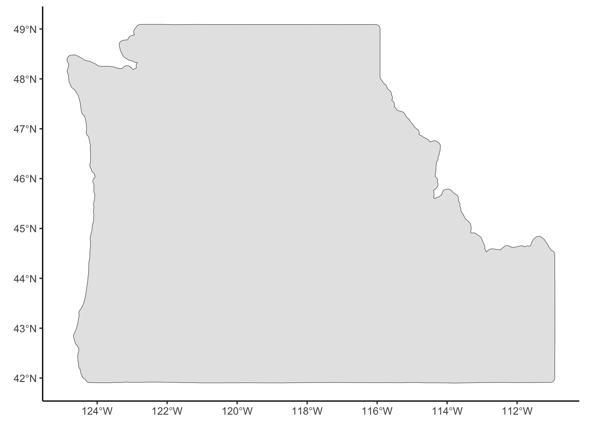
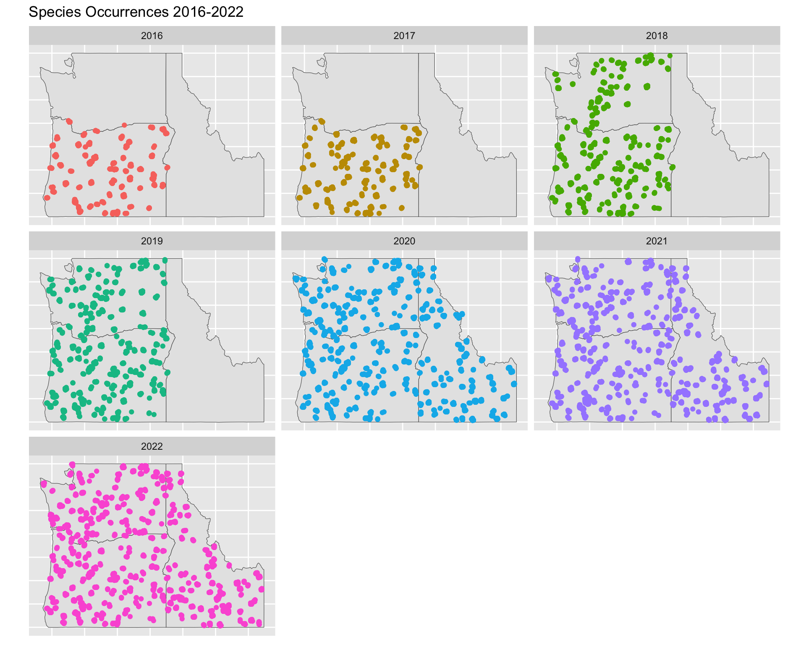

Code
#Load required libraries
require(tidyverse)
require(here) #for relative pathnames
require(sf)
require(usmap)The Northwestern Hub for Bat Population Research and Monitoring (Northwest Bat Hub) began efforts at annual summer occupancy surveys for the 15 endemic bat species to the Pacific Northwest in 2016 as a regional member of the North American Bat Monitoring Program (NABat). This effort has led to the collection of a robust species occurrence dataset–currently spanning eight years–which has contributed to national efforts at analyzing population-level trends at the national level.1 At a regional level, the Northwest Bat Hub has also produced many publications influencing study design,2,3 data analysis,4 and conservation management.5,6
Initial monitoring efforts began in Oregon but have since expanded to include partners in Washington (2018) and Idaho (2020). As a result, regional analyses have focused primarily on Oregon and Washington. The Northwest Bat Hub and it’s partners now have three years of vetted summer acoustic monitoring data which include Idaho, and are uniquely positioned to expand analyses to encompass that data.
The NABat grid has been designed to account for species absence, and serves as the foundation for many analyses conducted using summer acoustic monitoring data.2 The Maximum Entropy (MaxEnt) machine learning method leverages pseudo-absence (aka “presence-only”) data to make prediction about species occurrence across a study area. MaxEnt does not provide a robust infrastructure for population trends across time, but does provide an approachable framework for producing region-wide range maps using the NABat summer acoustic monitoring data set.
In this report, we will describe our approach to creating range maps for bat species in the three-state region of Oregon, Washington, and Idaho using the MaxEnt machine learning method. We then demonstrate how our approach can be flexibly implemented as a straight-forward extension to existing Bat Hub protocols. Finally, we discuss how collaborators might interpret and leverage model results in decision-making processes to support bat conservation.
Species Distribution Models (SDMs) are a part of a growing field of spatiotemporal models that leverage advancements in Machine Learning (ML) and Artificial Intelligence (AI). The Maximum Entropy (MaxEnt)7 method has become particularly popular due to its ability to handle presence-only data and its availability through open-source releases of the original java application8 and approximations in statistical modeling software ‘R’.9 We propose that we can leverage this openly available software to build a user-friendly extension of the Northwest Bat Hub’s data management pipeline that will efficiently provide visual data insights and summaries to its partners.
Briefly, MaxEnt works to make predictions about the probability of species occurrence across a study area given a set of vetted observations and a set of rasterized explanatory variables, also termed environmental covariates. The spatial resolution of the resulting predictions is determined by the spatial resolution of the available environmental covariates. In the context of this report, the study area of interest is the three-state region of Oregon, Washington, and Idaho. Species observation records were obtained from the Northwest Bat Hub’s vetted acoustic monitoring records and environmental covariates (Table 1) were determined through literature review.1,5,6 An in-depth explanation and motivation for the use of MaxEnt for ecological modeling purposes can be found in Elith et al., 201110.
| Covariate Name | Publication | Source |
| Annual mean precipitation | Udell et. al., 2022 | WorldClim 2.011 |
| Annual mean temperature | Udell et. al., 2022; Rodhouse et. al., 2019 | WorldClim 2.011 |
| Percent forest cover | Udell et. al., 2022; Rodhouse et. al., 2019 | National Land Cover Database12 |
| Percent water | Udell et. al., 2022 | National Land Cover Database12 |
| Percent wetland | Udell et. al., 2022 | National Land Cover Database12 |
| Elevation | Udell et. al., 2022; Rodhouse et. al., 2019 | National Elevation Dataset (NED)13 |
| Percent Cliffs & Canyon Cover | Rodhouse et. al., 2019 | National Land Cover Database12 |
To recreate this analysis, two components are required:
Presence-only formatted species observations
Rasterized environmental covariates covering the extent of the study area
Here we will show examples of how these data should be formatted for analysis. Further details and code for formatting can be found in the github repository for this project or in the appendix.
First it is helpful to define our study area, which is the three-state region of Oregon, Washington, and Idaho surrounded by a 10 km buffer.
#Load required libraries
require(tidyverse)
require(here) #for relative pathnames
require(sf)
require(usmap)#Get the OR, WA, ID outline for visualization
us_states <- us_map(regions = "states", include = c("OR", "WA", "ID")) %>%
st_transform(crs = 'WGS84')
#Project to equal-area projection to add buffer and union (Albers Equal Area CONUS)
pnw <- us_states %>%
st_transform(st_crs('EPSG: 5070'))
#Add buffer and union and tansform back to wgs84
pnw <- pnw %>%
st_make_valid() %>%
st_buffer(10000) %>%
st_union() %>%
st_transform(crs = "WGS84") %>%
st_sf() %>%
st_cast()
ggplot()+
geom_sf(data = pnw)+
theme_classic()
Assuming the user has access to the Northwest Bat Hub’s NABat Acoustic Monitoring Database, species occurrence records should be formatted as follows:
#read in the data
dat <- read_csv(here("DataProcessed.nosync/SpeciesOccurrence/spp_occ_master.csv"))head(dat)# A tibble: 6 × 19
LocationName year Latitude Longitude laci lano myev epfu myyu myth
<chr> <dbl> <dbl> <dbl> <dbl> <dbl> <dbl> <dbl> <dbl> <dbl>
1 100037_SE1 2016 42.4 -122. 0 0 0 0 0 1
2 100037_SE2 2016 42.4 -122. 1 0 1 0 0 0
3 100038_NE1 2016 42.5 -122. 0 0 1 0 0 0
4 100038_NW1 2016 42.5 -122. 1 0 0 0 0 0
5 100038_NW2 2016 42.4 -122. 0 1 1 1 0 0
6 100041_NE1 2016 42.5 -121. 0 1 0 0 0 0
# ℹ 9 more variables: myci <dbl>, myvo <dbl>, tabr <dbl>, anpa <dbl>,
# pahe <dbl>, euma <dbl>, myca <dbl>, mylu <dbl>, coto <dbl>The resulting data frame (or tibble) contains one row for each NABat survey site (LocationName), and each year that it was surveyed (year). Latitude and Longitude denote the coordinates for each survey site in decimal degrees (WGS84). The remaining columns are named by the four-letter code for each species (e.g. Lasiurus cinereus (laci), Lasionycteris noctivagans (lano), Myotis evotis (myev)) and denote vetted species occurrence for that year (1 = occurrence; 0 = did not occur).
We can visualize point-locations over time using the sf and ggplot packages:
#Need Long-format observations for plotting
dat_long <- pivot_longer(dat, cols = 5:ncol(dat), names_to = "spp", values_to = "presence") %>%
filter(presence > 0)
#Convert points to SF object
spp_occ <- st_as_sf(dat_long, coords = c("Longitude", "Latitude"), crs = "WGS84")
## Crop out points outside of the study area
spp_occ <- st_crop(spp_occ, pnw)
## Overall Plot
ggplot() +
geom_sf(data = us_states)+
geom_sf(data = spp_occ, aes(col = as.factor(year)))+
facet_wrap(~year, ncol = 3) +
labs(color = "Year",
title = "Species Occurrences 2016-2022")+
theme(legend.position = "none",
axis.text.x = element_blank(),
axis.text.y = element_blank(),
axis.ticks.x = element_blank(),
axis.ticks.y = element_blank())
Practically, MaxEnt only allows one observation for each site. Data have been provided by year in case the user wished to only look at a specific year. Otherwise, results will need to be aggregated across years by taking the maximum value for each species across all years. If this step is not completed, MaxEnt will select the first by default and drop duplicates.
dat_overall <- dat %>%
group_by(LocationName) %>%
reframe(Latitude = Latitude,
Longitude = Longitude,
laci = max(laci),
lano = max(lano),
myev = max(myev),
epfu = max(epfu),
myyu = max(myyu),
myth = max(myth),
myci = max(myci),
myvo = max(myvo),
tabr = max(tabr),
anpa = max(anpa),
pahe = max(pahe),
euma = max(euma),
myca = max(myca),
mylu = max(mylu),
coto = max(coto)) %>%
ungroup()
head(dat_overall)# A tibble: 6 × 18
LocationName Latitude Longitude laci lano myev epfu myyu myth myci
<chr> <dbl> <dbl> <dbl> <dbl> <dbl> <dbl> <dbl> <dbl> <dbl>
1 100037_SE1 42.4 -122. 0 0 0 0 0 1 0
2 100037_SE2 42.4 -122. 1 0 1 0 0 0 0
3 100038_NE1 42.5 -122. 0 0 1 0 0 0 1
4 100038_NW1 42.5 -122. 1 0 0 0 0 0 0
5 100038_NW2 42.4 -122. 0 1 1 1 0 0 0
6 100041_NE1 42.5 -121. 0 1 1 0 0 0 0
# ℹ 8 more variables: myvo <dbl>, tabr <dbl>, anpa <dbl>, pahe <dbl>,
# euma <dbl>, myca <dbl>, mylu <dbl>, coto <dbl>Briefly give some details about model parameters (RM, feature types, etc…)
Code for serializing the maxent model.
Figure containing all range maps
Figure for each range map may be found in the appendix
Brief explanation of the definition of ‘occurrence probability’
Where can you find these results?
What are some of the drawbacks of MaxEnt?
What are other questions the bat hub is interested in answering?
How may these questions be answered using trend analysis?